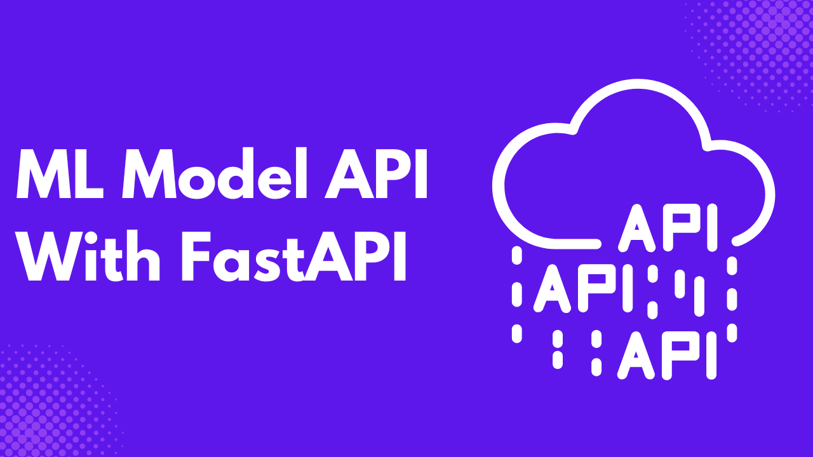
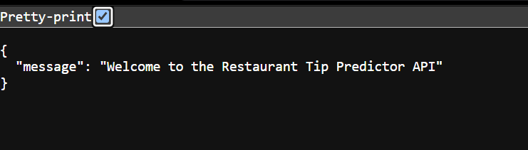

If you have built AI applications, you might have used an API from OpenAI or Anthropic. These are models that are made easily accessible to developers through APIs. Have you ever wondered how these APIs were built? This article will teach you how to build your first machine learning model API using FastAPI.
FastAPI is a Python library for building APIs, especially REST APIs. As a data scientist or machine learning engineer, you can make your machine learning model available to clients through an API. This API will fetch client input and return predictions, making it easy for anyone to use your model in their application.
Prerequisites
- Python 3.9+ installed
- IDE or code editor such as VS Code
- The following libraries are are installed:
fastapito build the ML model APIpandasfor data wranglingseabornfor the sample datasetscikit-learnfor building the predictive modeljoblibfor exporting the model as a joblib fileuvicorna lightweight server for running the ML APIpydanticfor type annotations
Step 1 - Setup Working Directory
Create a project and give it an appropriate name. Inside the project directory, create the following files: app.py for the API code and utilis.py for the code to build the predictive model. Next, create and activate a virtual environment.
python -m venv venv
source venv/bin/activateNext, install the following libraries.
pip install fastapi pandas seaborn scikit-learn joblib uvicorn pydanticStep 2 - Preprare the Dataset
For this article, you will build a machine learning model using the tips dataset in the seaborn library. Here are the variables in the tips dataset.
total_bill: The total amount of the bill.tip: The tip amount given.sex: The gender of the payer.smoker: Whether or not the payer smoked.day: The day of the week.time: The time of day.size: The size of the dining party.
The tips dataset has six features, and you will build a model predicting the tip amount given. Import the following libraries into the utilis.py file.
import pandas as pd
import seaborn as sns
from sklearn.model_selection import train_test_split
from sklearn.ensemble import RandomForestRegressor
from sklearn.preprocessing import StandardScaler
from sklearn.pipeline import Pipeline
from sklearn.metrics import mean_squared_error, r2_score
import joblibCreate a function prepare_dataset inside utilis.py that splits the tips dataset into training and testing datasets and returns them.
def prepare_dataset():
"""Load and prepare the dataset for modeling"""
# Load the tips dataset from seaborn
tips = sns.load_dataset('tips')
print("Dataset overview:")
print(tips.head())
print("\nDataset info:")
print(tips.info())
# Convert categorical features to dummy variables
tips_encoded = pd.get_dummies(tips, columns=['sex', 'smoker', 'day', 'time'])
# Define features and target
X = tips_encoded.drop('tip', axis=1)
y = tips_encoded['tip']
# Split the data
X_train, X_test, y_train, y_test = train_test_split(X, y, test_size=0.2, random_state=42)
return X_train, X_test, y_train, y_test, X.columnsAs you may have noticed, we have one-hot encoded some of our features: sex, smoker, day, and time. This means that each value in these features is a variable, and the clients will send Boolean values to these new variables.
Step 3 - Build the Machine Learning Model
Create the function train_model inside utilis.py that builds a random forest regressor by taking the training features and outcome variable.
def train_model(X_train, y_train):
"""Train a RandomForestRegressor model"""
# Create a pipeline with preprocessing and model
pipeline = Pipeline([
('scaler', StandardScaler()),
('regressor', RandomForestRegressor(n_estimators=100, random_state=42))
])
# Train the model
pipeline.fit(X_train, y_train)
return pipelineCreate another function, evaluate_model, that returns the random forest model’s evaluation metrics, mse, and r2. This function takes the model, test features, and outcome as arguments.
def evaluate_model(model, X_test, y_test):
"""Evaluate the trained model"""
y_pred = model.predict(X_test)
# Calculate metrics
mse = mean_squared_error(y_test, y_pred)
r2 = r2_score(y_test, y_pred)
print(f"Model Evaluation:")
print(f"Mean Squared Error: {mse:.4f}")
print(f"R² Score: {r2:.4f}")
return mse, r2Next, create the function that saves the model into your project directory. This is important if your model takes time to build. Instead of constantly re-running the model, you have all the model weights saved to a file. The joblib file stores all the model weights and makes it easy to make predictions for a new dataset.
def save_model(model, filename="tip_predictor_model.joblib"):
"""Save the trained model to a file"""
joblib.dump(model, filename)
print(f"Model saved as {filename}")Finally, create the function prepare_and_train_model(). This function calls all the functions we created earlier and returns the model and feature_names. We also save the feature_names to a joblib file to validate incoming inputs from clients in the API.
def prepare_and_train_model():
X_train, X_test, y_train, y_test, feature_names = prepare_dataset()
model = train_model(X_train, y_train)
evaluate_model(model, X_test, y_test)
save_model(model)
# Save feature names for input validation
joblib.dump(feature_names, "feature_names.joblib")
return model, feature_namesStep 4 - Create the API Endpoints
Go to app.py and paste the following imports.
import pandas as pd
from fastapi import FastAPI, HTTPException
from pydantic import BaseModel, Field
import joblib
from utilis import prepare_and_train_modelThe code above also imports the prepare_and_train_model from the utilis.py file. Next, create an instance of the FastAPI class.
app = FastAPI(
title="Restaurant Tip Predictor API",
description="API for predicting tips using the Seaborn tips dataset",
version="1.0.0"
)The FastAPI class provides the title, description, and version of the ML Model API. To validate client input, define a Pydantic model TipsPredictionRequest.
class TipPredictionRequest(BaseModel):
total_bill: float = Field(..., description="Total bill amount", gt=0)
size: int = Field(..., description="Party size", gt=0)
sex_Female: bool = Field(False, description="Customer is female")
sex_Male: bool = Field(False, description="Customer is male")
smoker_No: bool = Field(False, description="Non-smoker")
smoker_Yes: bool = Field(False, description="Smoker")
day_Fri: bool = Field(False, description="Friday")
day_Sat: bool = Field(False, description="Saturday")
day_Sun: bool = Field(False, description="Sunday")
day_Thur: bool = Field(False, description="Thursday")
time_Dinner: bool = Field(False, description="Dinner time")
time_Lunch: bool = Field(False, description="Lunch time")The code above specifies several fields with types and validation rules, including total_bill (a required buoyant float representing the total bill amount) and size (a required positive integer representing the size of the dining party).
The model also includes a series of boolean fields, all of which default to False, that encode categorical features such as the customer’s sex (sex_Female, sex_Male), smoking status (smoker_No, smoker_Yes), day of the week (day_Fri, day_Sat, day_Sun, day_Thur), and meal time (time_Dinner, time_Lunch).
Create a Pydantic model TipPredictionResponse for the API response, also.
class TipPredictionResponse(BaseModel):
predicted_tip: floatCreate a function that loads the ML model joblib file.
def load_model(model_path="tip_predictor_model.joblib"):
"""Load the trained model from file"""
try:
model = joblib.load(model_path)
return model
except:
raise HTTPException(
status_code=500,
detail="Model not found. Please train the model first."
)The load_model function loads the joblib file from the specified path. If an error occurs, an HTTPException is raised.
Paste the following code also into the utilis.py file.
model = None
feature_names = None
@app.on_event("startup")
async def startup_event():
"""Load model on startup"""
global model, feature_names
try:
model = joblib.load("tip_predictor_model.joblib")
feature_names = joblib.load("feature_names.joblib")
print("Model loaded successfully")
except Exception as e:
print(f"Error loading model: {e}")
print("Training new model...")
model, feature_names = prepare_and_train_model()The code above defines an asynchronous function, startup_event(), that runs when the application starts, using the @app.on_event("startup") decorator.
The function aims to load the machine learning model tip_predictor_model.joblib and its associated feature names feature_names.joblib from disk into global variables model and feature_names.
If loading the model files fails, the function catches the exception, logs an error message, and calls prepare_and_train_model() to train a new model and set the global variables accordingly. This ensures the app always has a ready-to-use model, either loaded or freshly trained, upon startup.
Copy and paste the following code also.
@app.get("/")
def read_root():
"""Root endpoint"""
return {"message": "Welcome to the Restaurant Tip Predictor API"}The code above defines a simple HTTP GET endpoint at the application’s root URL ("/"), using the @app.get("/") decorator.
The function read_root() is called whenever someone accesses the root path. It returns a JSON response containing a message: {"message": "Welcome to the Restaurant Tip Predictor API"}.
This serves as a basic welcome or health check endpoint to confirm that the API is running and reachable. Next, create the model endpoint as follows.
@app.post("/predict", response_model=TipPredictionResponse)
def predict_tip(request: TipPredictionRequest):
"""Predict tip amount based on input features"""
# Convert input data to DataFrame with correct columns
input_dict = request.model_dump()
input_df = pd.DataFrame([input_dict])
# Reorder columns to match the model's expected feature names
try:
input_df = input_df[feature_names]
except KeyError as e:
raise HTTPException(
status_code=400,
detail=f"Input data is missing required features: {e}"
)
# Make prediction
predicted_tip = model.predict(input_df)[0]
return TipPredictionResponse(
predicted_tip=round(float(predicted_tip), 2)
)This code defines a POST endpoint at "/predict" in the application, using the @app.post decorator with a specified response_model of TipPredictionResponse.
The predict_tip function accepts a request payload of type TipPredictionRequest, which contains the input features needed for the prediction. It converts the request data into a dictionary and then a Pandas DataFrame.
The columns of the DataFrame are reordered to match the expected order defined by the global feature_names. If any required feature is missing, it raises a 400 Bad Request error using an HTTPException.
Once the input is validated and properly formatted, the function uses the pre-loaded machine learning model to predict the tip amount, rounds the prediction to two decimal places, and returns it as a TipPredictionResponse object.
To be able to run the model API, copy and paste the following code at the end of your app.py file.
if __name__ == "__main__":
try:
model = joblib.load("tip_predictor_model.joblib")
feature_names = joblib.load("feature_names.joblib")
except:
print("No model found. Training new model...")
model, feature_names = prepare_and_train_model()
# Run the API server
uvicorn.run("app:app", host="0.0.0.0", port=8000, reload=True)The code above is the application’s entry point. It runs only when the script is executed directly, not when imported as a module.
It first tries to load a pre-trained model and its feature names using joblib. If the files are not found or loading fails, they don’t exist; it catches the exception and trains a new model by calling prepare_and_train_model().
After that, it starts a FastAPI server using uvicorn, binding it to all network interfaces 0.0.0.0 on port 8000 with auto-reload enabled. This is helpful for development as it restarts the server when code changes.
Step 5 - Test the API endpoints
To test the API, call the following shell command on your terminal.
python -m appYour application will automatically open up at the URL https://0.0.0.0:8000

To view the automatically generated interactive API documentation, add /docs to the end of the API URL https://0.0.0.0:8000/docs .

You will notice that we have two API endpoints. The first one is the root URL that opens when the API launches, while the second is the prediction endpoint.
Click on the dropdown of the prediction endpoint, and give the various appropriate values in the JSON fields.

Click the Execute button to get the predicted tip value.

Conclusion
Building an API shows how you have made your machine learning model interactive. You can test your API, integrate it with various frontend applications, or deploy it on various cloud platforms. I discussed this more in my course ML Model Deployment with FastAPI and Streamlit.
Need Help with Data? Let’s Make It Simple.
At LearnData.xyz, we’re here to help you solve tough data challenges and make sense of your numbers. Whether you need custom data science solutions or hands-on training to upskill your team, we’ve got your back.
📧 Shoot us an email at admin@learndata.xyz—let’s chat about how we can help you make smarter decisions with your data.